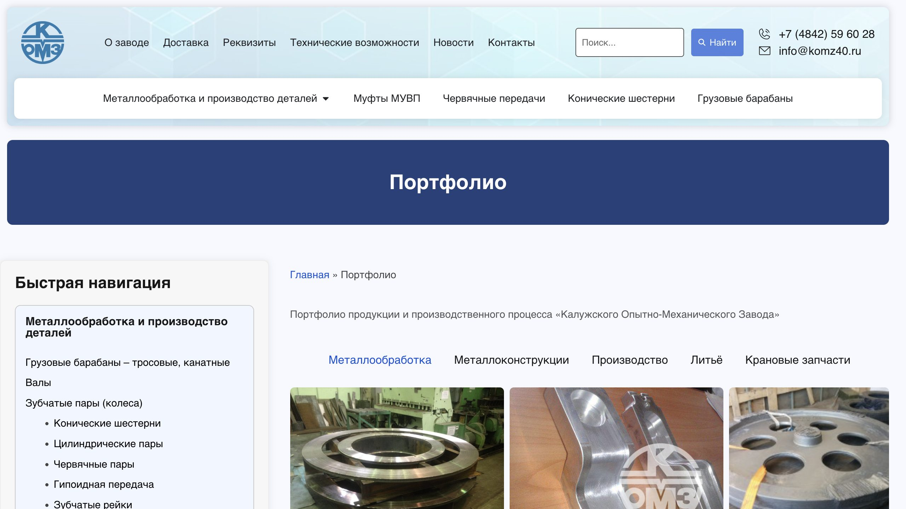

ПОРТФОЛИО / ПРОИЗВОДСТВО
КОМЗ.
Сайт Калужского
опытно-механического завода
Разработали и сопровождаем сайт завода на WordPress. На нём представлены услуги, производственные возможности и примеры продукции предприятия.
Посетить сайт (откроется в новой вкладке)- ПРОЕКТ
- Сайт завода
- СФЕРА
- Производство
- ПЛАТФОРМА
- WordPress / Elementor
- ЛОКАЦИЯ
- Калуга
ПРОЕКТ В ДЕТАЛЯХ
KOMZ40.RU / 02

01 / О ПРОЕКТЕ
Производство
в понятной структуре.
Калужский опытно-механический завод занимается производством и металлообработкой, в том числе изготовлением деталей по чертежам. Сайт помогает познакомиться с услугами и техническими возможностями предприятия.
Разделы портфолио показывают продукцию и производство. Для запроса расчёта на сайте предусмотрена форма с прикреплением технического задания.
Открыть komz40.ru (откроется в новой вкладке)02 / ПОРТФОЛИО
Продукция
и производство.
Портфолио завода помогает посетителям познакомиться с его работами.

ВАШ ПРОЕКТ / НАЧНЁМ С РАЗГОВОРА